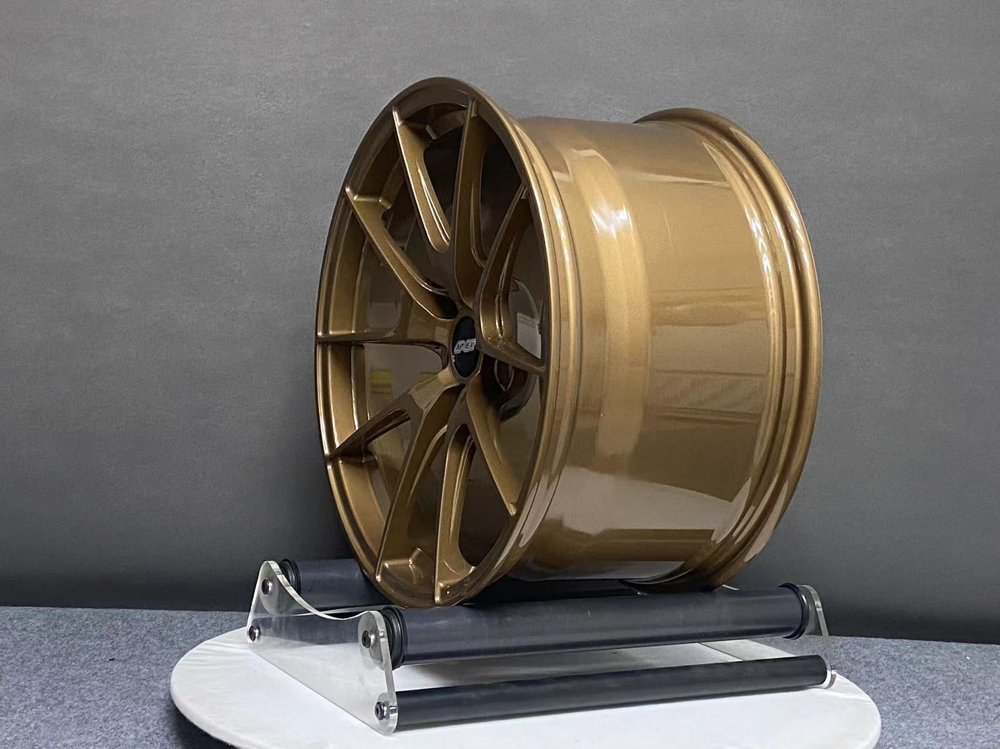
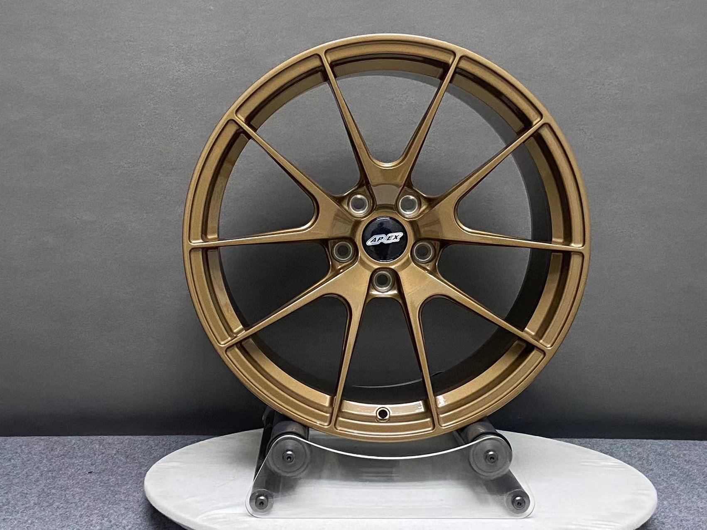
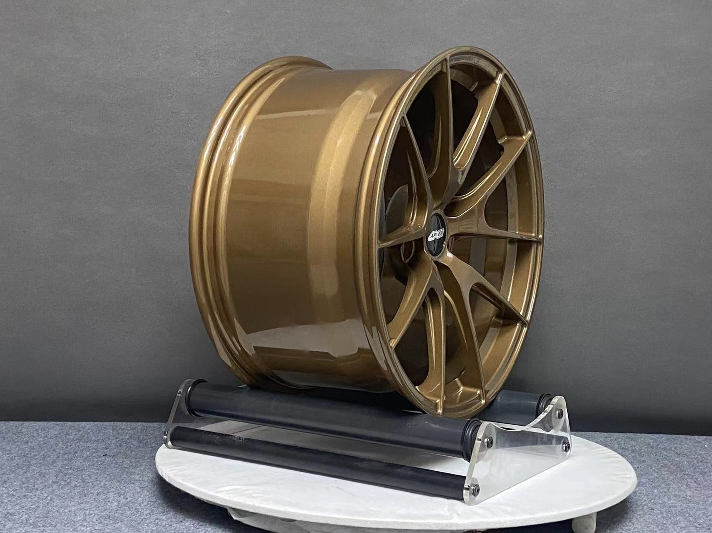

Career mode:
od nápadu po krabici
Custom kovaná kola nejsou zboží ze skladu. Každá zakázka jede sedmi fázemi a ke každé dostaneš fotky a videa. Tady je celá trať.
Konzultace
Základ všeho. Řekneš nám, co chceš, my řekneme, co je reálné a co bude nejlepší.
Co potřebujeme od tebe
- Pro jaké auto kola chceš (model, generace, rok).
- Vybraný design kola.
- Požadované rozměry: průměr, šířka, ET, PCD, CB.
- Cílovou váhu kol a případné další požadavky (brzdy, sražení, adaptéry).
Co dostaneš
- Návrh rozměrů a fitmentu pro tvůj vůz.
- Orientační cenu a časový plán.
- Rychlou odpověď s dalším postupem.
Návrh
Výrobce připraví technický výkres (Technical Drawing). Nic se nevyrábí, dokud ho neschválíš.
Co potřebujeme od tebe
- Kontrolu všech rozměrů a parametrů ve výkresu.
- Písemné schválení před zahájením výroby.
Co dostaneš
- Technický výkres s kompletními parametry (průměr, šířka, ET, PCD, CB, profil paprsku, váha).
- Případné úpravy podle tvých připomínek.
Technický výkres připravíme pro konkrétní rozměry a vůz ke schválení před výrobou.
Výběr vzhledu
Charakter kola. Vybíráš barvu, povrch, krytky a detaily.
Vybíráš
- Barvu (katalog nebo vlastní RAL).
- Povrchovou úpravu: Gloss / Satin / Matte, chrom apod.
- Středové krytky.
- Případně další individuální detaily (límec, gravírování, skryté šrouby).
Co dostaneš
- Náhled zvolené kombinace z konfigurátoru.
- Potvrzení barvy a povrchu před výrobou.
Výroba Foto + video
Po schválení výkresu začíná výroba. Během výroby dostáváš fotografie a videa z jednotlivých fází.
Fáze výroby
- Kování hliníkového polotovaru.
- CNC obrábění čela a zadní strany.
- Frézování paprsků a dutin.
- Lakování.
- Další operace podle zvoleného povrchu (leštění, kartáčování, chrom).
- Montáž (u třídílných kol).
Co dostaneš
- Fotky a videa z CNC obrábění.
- Fotky a videa z lakování a montáže.
- Průběžné informace o termínu.

Finální kontrola Foto + video
Výrobce zašle fotografie hotových kol. Ověříme parametry a ty potvrdíš finální podobu.
Co ověřujeme
- Rozměry (průměr, šířka, ET, PCD, CB).
- Váhu každého kola.
- Barvu a povrch oproti schválené specifikaci.
Co dostaneš
- Fotografie hotových kol ze všech stran.
- Fotky z váhy a měření.
- Prostor pro tvoje finální potvrzení.


Balení
Kola jsou zabalena do ochranné balení. Každá krabice obsahuje vlastní Need For Wheels štítek s parametry konkrétního kola.
Balení
- Každé kolo ve vlastní krabici s označením Need For Wheels.
- Ochrana čela i límce při přepravě.
Need For Wheels štítek
- Pozice na autě (FL / FR / RL / RR).
- Rozměr, ET, PCD, CB.
- Barva, povrch, váha.
- Číslo zakázky.
Expedice Foto + video
Po finálním schválení jsou kola odeslána k tobě.
Co potřebujeme od tebe
- Doručovací adresu a kontakt pro dopravce.
Co dostaneš
- Foto a video zabalené zásilky.
- Informaci o odeslání.
- Kola. Konečně.
Sestav si sadu za pár minut
Konfigurátor ti připraví kompletní specifikaci i orientační cenu. Poptávka odchází rovnou s parametry pro technický výkres.